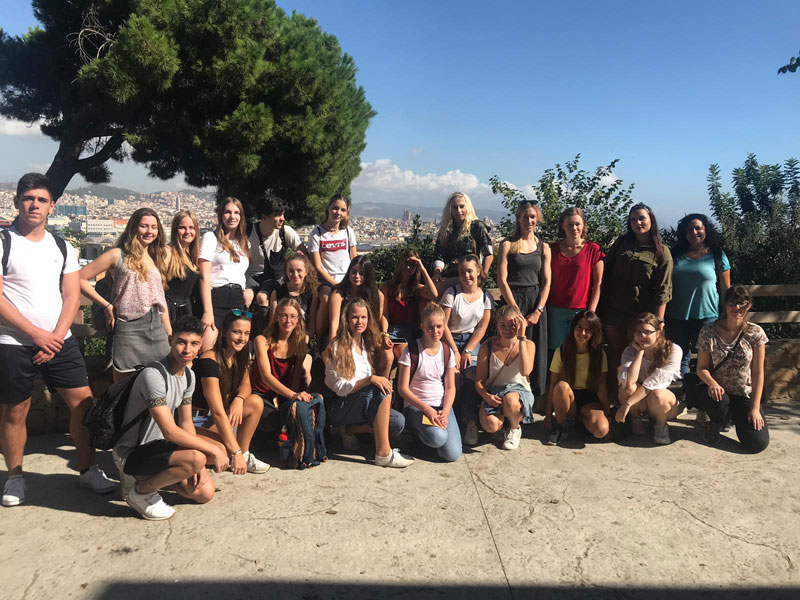
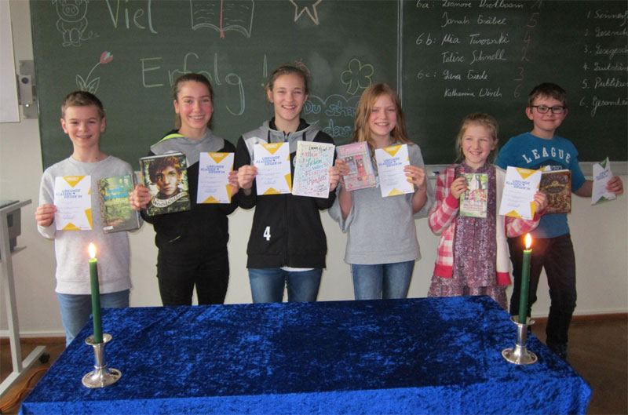
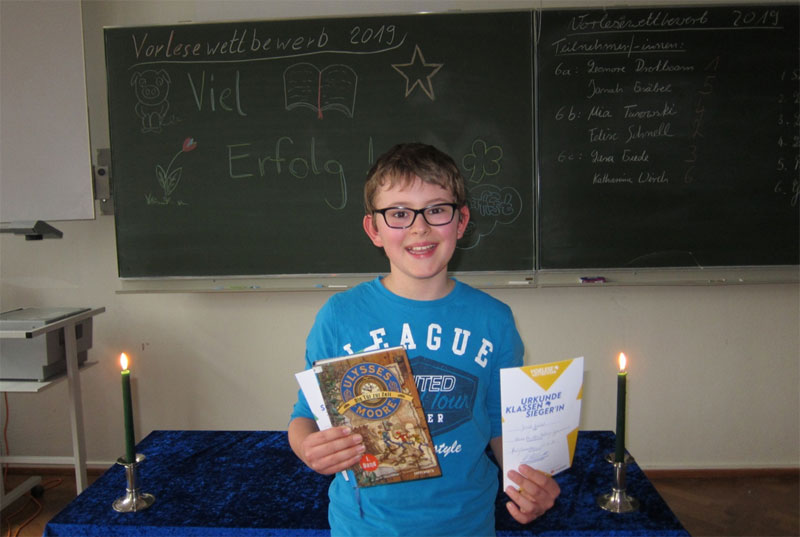

Liebe Mitschülerinnen und Mitschüler, liebe Eltern,
in der nächsten Woche vom 13.01. bis 17.01. findet in den großen Pausen der Leibniz-T-Shirt- und Pulli-Verkauf statt. Eure Bestellungen nehmen wir gerne entgegen.
Ein Pullover kostet 35,-€ und ein T-Shirt 15,-€. Die zu erhaltenen Farben sind schwarz und blau.
Bei Fragen wendet Euch gerne an Diese E-Mail-Adresse ist vor Spambots geschützt! Zur Anzeige muss JavaScript eingeschaltet sein. .
Eure SV
Allen "Leibnizern" ein Frohes Neues Jahr!!!
Erstellt am .
Wir wünschen allen Leibnizer (und natürlich auch allen anderen Menschen) ein frohes, neues, gesundes und glückliches Jahr und hoffen, dass Sie alle alle gut ins neue Jahrzehnt gestartet sind.
Akt. Hinweise:
Der Unterricht beginnt nach Plan wieder am Dienstag, den 07.01.2020.
Am Montag, den 03.02.2020. findet ein Schulentwicklungstag statt, die Schülerinnen und Schüler arbeiten zuhause.
Am Donnerstag, 6. Februar 2020, 17:30 Uhr findet die Informationsveranstaltung für die neuen 5. Klassen statt.
Verkauf von LG Merch-Flaschen & Bestellung weiterer Artikel
Erstellt am .
Am Freitag, dem 20.12., werden wir, das Englisch-Profil Ea, euch Schüler in der 1. Schulstunde in euren Klassenräumen besuchen. Ihr könnt dann direkt bei uns nochmals die Leibniz-Trinkflaschen für 10€ kaufen, falls ihr Interesse habt. Außerdem werden wir Bestelllisten für weitere Merchartikel, wie z.B. LG Socken, Kugelschreiber, Bleistifte, Thermoflaschen, Powerbanks, USB-Sticks usw., mitbringen, auf denen ihr euch eintragen könnt. Auch bringen wir wieder Wunschlisten für weitere Artikel mit.
Natürlich ist das Angebot auch für alle Lehrer offen, die Interesse haben!
Bundestagsfahrt 2019
Erstellt am .
Am Montag, dem 16. Dezember, hieß es für den E-Jahrgang wieder WiPo-Lernen am anderen Ort und zwar in Berlin. Ca. 85 Schüler/-innen besuchten in Begleitung von Frau Krtschil, Herrn Peil und Herrn Bienengräber den Bundestag. Zunächst gab es einen Fachvortrag im Plenarsaal des wichtigsten deutschen Parlamentes. Danach stellte sich der Wahlkreisabgeordnete Ingo Gädechens (CDU) den, zum Teil kritischen, Fragen der Schülerschaft. Der Besuch der Reichstagskuppel mit Blick auf die eindrucksvolle abendliche Silhouette unserer Hauptstadt rundete den Besuch ab.
Handball-Jungen-Auswahl erreicht 2. Platz im Kreisentscheid
Erstellt am .
Auch die Schul-Kreismeisterschaften (Jugend trainiert für Olympia) im Handball der Jungen fanden wie üblich im Dezember – diesmal von uns ausgerichtet in der Jahn-Halle in Bad Schwartau – statt. Da zwei Schulen überraschend nicht antreten konnten, fand das kleine Turnier zwischen der Gemeinschaftsschule Grömitz, dem GaM und dem Leibniz-Gymnasium statt.
Das über lange Zeit ausgeglichene Spiel gegen das Gymnasium am Mühlenberg konnte das Nachbargymnasium nach einer zwischenzeitlich knappen Führung dann zum Ende deutlich mit 15:10 für sich entscheiden. Nach einem hohen Sieg von 27:11 des GaMs über die Gemeinschaftsschule Grömitz, konnten unsere Jungen das Spiel gegen das Team aus Grömitz mit 14:11 für sich entscheiden und sich so den zweiten Platz sichern. Wir gratulieren der Jungenmannschaft vom GaM zum Kreisfinalsieg.
J. Klinke
Neues AG-Angebot
Erstellt am .
Wer hat Lust auf eine umweltfreundlichere Schule? (Bzw. daran mitzuwirken oder entsprechende Veränderungen mitzugestalten?)
Erstes Treffen: Mittwoch 8.1.2020, zweite gr. Pause, oberer Musikraum
Ansprechpartner: Olaf Koep
Adventsbasar 2019
Erstellt am .
Am Freitag, dem 06.12.2019, fand unser traditioneller Adventsbasar statt. Auch dieses Jahr hatten wir mit rund 65 Ständen eine große Vielfalt an Leckereien, selbstgemachten Dekoartikeln und Vielem mehr. Wir konnten über 4200 Euro einnehmen, welche genauso wie im letzten Jahr an das Ronald McDonald Haus und an Lebens(T)räume gespendet werden.
Besonders freut uns, dass alle 45 Wünsche des Wunschbaums schon vor Beginn des Basars vergeben wurden und so viele Kinder glücklich gemacht werden können. Vielen Dank an alle, die einen Wunsch übernommen haben. Wir hoffen, dass diese Quote auch in Zukunft gehalten wird.
Viele hundert Besucher kamen zum Adventsbasar, um die Atmosphäre zu genießen und vielleicht schon einmal das ein oder andere Weihnachtsgeschenk für ihre Liebsten zu kaufen.
Es war wieder einmal ein wunderschöner, vorweihnachtlicher Nachmittag mit vielen engagierten Schülern, Lehrern sowie Eltern, sodass der Adventsbasar auch dieses Jahr wieder ein voller Erfolg war.
Eure SV
Barcelona-Austausch 2019
Erstellt am .
Im September 2019 fand der Gegenbesuch unserer Schule mit dem „Instituto de Pompeu Fabra“ in Martorell, in der Nähe von Barcelona, statt. An dem Austausch nahmen eine Gruppe von 11 Schülerinnen der 11. Klasse teil. Organisiert wurde dieser von Frau Köhler und Frau Borchardt.
Gerade am Flughafen in Hamburg angekommen, voller Vorfreude auf die Fahrt, erwartete uns erstmal ein kleiner Schock: wo blieb Frau Borchardt? Durch einen Stau auf der Autobahn hatte sich ihre Ankunft verzögert, trotzdem erreichte sie zu unserer großen Erleichterung rechtzeitig das Gate und wir konnte vollzählig den Flieger betreten. In der Schule in Martorell empfingen uns unsere Austauschschüler bereits mit liebevoll vorbereiteten spanischen Snacks. Völlig erschöpft gingen wir trotzdem erst gegen Mitternacht ins Bett, weil wir vorher noch einen entspannten Abend als Gruppe verbracht hatten.

Am nächsten Tag erwartete uns dann der erste Teil der Stadtführung durch Barcelona, inklusive eines Besuches der Sagrada Familia, einer beeindruckenden Basilika. Abends fand dann im Jugendzentrum ein Treffen statt, bei dem wir kläglich daran scheiterten, den Spaniern, in einer Mischung aus Englisch und Spanisch, die Regeln von „Activity“ beizubringen.
Ein sportlich aber auch historisch interessanter Ausflug erwartete und am nächsten Tag in Barcelona. Während wir am Morgen noch durch die Gassen des „Poble Espanyol“, einem Freilichtmuseum, geführt wurden, fanden wir uns nachmittags bereits auf dem Feld des Stadions des FC Barcelonas wieder.
Trotz der „Fridays for Future“ Demonstration besuchten wir am Freitag zusammen mit unseren Austauschschülern die Schule für zwei Stunden um daraufhin, mit Churros vollgestopft, ins Barrio Gótico in Barcelona aufzubrechen. Nach einem sehr anstrengenden Fußmarsch erreichten wir endlich den Strand, wo es leider, trotz perfekter Wetterbedingungen, zu kalt zum Baden war. Nach diesem ereignisreichen Tag feierten wir den Geburtstag einer Mitschülerin in einer Tapasbar.
Unseren letzten Tag in Spanien verbrachten wir in einem Freizeitpark, von wo aus man eine perfekte Sicht über Barcelona hatte. Ein gelungener Abschluss für einen gelungenen Austausch, durch den wir sowohl neue Eindrücke als auch schöne Erinnerungen gewinnen konnten.
Süntje Teyen
Vorlesewettbewerb 2019
Erstellt am .
Auch in diesem Jahr führt der deutsche Buchhandel einen Vorlesewettbewerb für alle Schulen durch. Dazu hat am Dienstag, dem 03. Dezember 2019, am Leibniz-Gymnasium der schulinterne Vorlesewettbewerb für die 6. Klassen stattgefunden, bei dem die folgenden Klassensieger/-innen gegeneinander antraten (siehe Foto):

Vor einem begeisterten Publikum, das sich aus Vertretern aller 6. Klassen zusammensetzte, und einer kompetenten Jury, zu der Herr Dr. Matlok, Frau Krützfeld, Haakon Hoffmann als Schüler aus der Oberstufe und Marieke Flatau als letzte Schulsiegerin gehörten, gewann der Schüler Jonah Gräbel aus der Klasse 6a den ersten Platz. Er wird zum weiterführenden Regionalentscheid im Februar 2020 eingeladen werden.

Ich gratuliere den Klassensiegern und -siegerinnen und besonders unserem diesjährigen Schulsieger Jonah und bedanke mich bei allen Beteiligten.
Frau B. Jaecks, Orientierungsstufenleiterin
Leibniz-Merch auf dem Adventsbasar
Erstellt am .
Wir, das Englisch-Profil der Einführungsstufe (Ea) und Frau Haupt, haben uns dazu entschlossen, LG-Merchandise für die Schüler und Lehrer des Leibniz zu kreieren. Auf dem kommenden Adventsbasar am 6.12. werden wir einen Stand betreiben, bei welchem wir euch Weiteres zu unserer Idee erzählen. Kommt uns also gerne besuchen! Außerdem werden wir an unserem Stand bereits Trinkflaschen mit dem Leibniz-Logo als Vorgeschmack verkaufen.
Zukünftig planen wir auch in der Schule weiterhin Leibniz-Merch-Artikel zu verkaufen, wofür wir bereits ein kleines Sortiment vorbereitet haben. Dafür wird es an unserem Stand auf dem Adventsbasar eine Bestellliste geben, auf der man sich verbindlich für die Bestellung dieser geplanten Artikel eintragen kann. Diese werden dann nach dem Adventsbasar für die Eingetragenen bestellt.
Zu den bestellbaren Artikeln gehören:
Trinkflaschen
Kugelschreiber
Powerbanks
USB-Sticks
Es wird zudem auch eine Liste geben, auf der man seine Wünsche für zukünftige Merch-Artikel eintragen kann, also äußert euch auch dort gerne!
Leibniz-Schüler erfolgreich auf Sendung
Erstellt am .
Heute (Mittwoch, 04.12.) war es endlich soweit, die einstündige Radiosendung, welche von fünf 9. Klässler/innen erarbeitet wurde, war beim Offenen Kanal Lübeck zu hören. Die zwei Hauptmoderatoren Helena und Hauke hatten sich mehrere Wochen mit der Planung und Konzeption der Sendung auseinandergesetzt. Hierfür wählten sie verschiedene Musiktitel aus, planten den detaillierten Verlauf und überlegten, welche weiteren Mitschüler/innen eine Aufgabe übernehmen sollten. Das genaue Skript wurde immer wieder überarbeitet, verändert, erweitert und schließlich für passend befunden. Somit standen als Experten Julie, Sophie und Enno bereit, die die beiden Moderatoren mit Informationen unterstützten. Zum Schluss entschieden sich die Schüler/innen noch für einen passenden Titel der Sendung.
Unter der Leitung von Frau Mertes und der Unterstützung des Offenen Kanals konnten die Schüler/innen die Sendung am Dienstag im Studio in direktem Durchlauf, wie eine Live-Sendung, aufnehmen. Die Wiederholung der Sendung ist am Montag, den 09.12. um 17 Uhr zu hören.
30. Ratzeburger Adventslauf
Erstellt am .
Das Leibniz-Gymnasium war nach 2018 zum zweiten Mal beim Ratzeburger Adventslauf vertreten. Wie auch im Vorjahr waren die Bedingungen nicht ganz optimal, da es auch dieses Jahr wieder recht feucht und kalt war.
Paula Altmann, Emily Brüning und Frau Haupt liefen die kleine Runde um den Küchensee. Diese musste zweimal absolviert werden, so dass die Strecke dann 5,6 km lang war. Paula konnte sich schnell absetzen und dominierte das Frauenfeld. Ihr Vorsprung auf die Zweitplatzierte betrug mehr als 30 Sekunden. Emily erlief sich einen Platz unter den Top 20 und wurde 4. bei der U18-Wertung. Tolle Leistung!
Leider ist das Finden gemeinsamer Trainingszeiten im Moment sehr schwierig für die Mitglieder der Lauf-AG. Wer gerne bei der Lauf-AG mitmachen möchte, wendet sich bitte an Frau Haupt.
Leibniz-Handballerinnen gewinnen Kreisfinale
Erstellt am .
Am Donnerstag, 28.11. fand das Handball-Kreisfinale der Mädchen (Altersklasse WII) zwischen dem Gymnasium am Mühlenberg und unseren „Handballmädels" statt. Die beiden Mannschaften hatten die Kreismeisterschaft in den letzten Jahren bereits häufig unter sich ausgemacht und so versprach das Spiel auch diesmal Spannung und hohe spielerische Qualität. Nachdem unsere Mädchen die erste Spielhälfte mit 11: 5 klar für sich entscheiden konnten, wurde es in der zweiten Hälfte für uns Leibnizer dann zwischenzeitlich nervenaufreibender. So konnten die Mädchen vom GaM mit 4 Toren in Folge noch etwas rankommen, bevor die neun Leibnizerinnen Nervenstärke und Kampfgeist zeigten und nach einem zwischenzeitlichen 15:11 dann doch recht deutlich die Partei mit 21:14 für sich entscheiden konnten! Wir freuen uns auf die Bezirksmeisterschaft am 11.02.!!!
Das Leibniz-Gymnasium am 04.12. im Radio!
Erstellt am .
Am Dienstag, dem 03.12.19, werden Schüler/-innen der 9. Jahrgangsstufe eine selbst produzierte Radiosendung im Rahmen des Wahlpflichtskurses "Kunst und Kultur" beim Offenen Kanal Lübeck aufnehmen. Die Sendung beinhaltet neben zahlreichen Musiktiteln Berichte über eigene Projekte der Schüler/-innen, Informationen über Lübecker Autoren, besonders Thomas Mann und sein Werk "Die Buddenbrooks" sowie den aktuellen Wetterbericht und Eventtipps (u.a. Hinweis zum Adventsbasar).
Die Sendung wird am Mittwoch, dem 04.12., um 16 Uhr live beim OK Lübeck ausgestrahlt und am Montag, 09.12. um 17 Uhr wiederholt. Die Sendung kann über UKW 98.8 oder den Livestream unter https://www.oksh.de/hl/hoeren/luebeck-fm-livestream/ angehört werden.
M. Mertes
Jazz und Big Band Konzert am Leibniz-Gymnasium
Erstellt am .
Am Donnerstag, dem 14.11.19, veranstaltete das Leibniz-Gymnasium zum ersten Mal einen gepflegten Jazzmusikabend der besonderen Art.
Eröffnet wurde dieses erfreulich gut besuchte Konzert durch das Lehrertrio (Kelm, Brüning, Koep). Verstärkt durch den Schlagzeuger Benni Lütke aus Mölln erklangen Songs vom Esbjörn Svensson Trio und Joey Calderazzo.
Direkt im Anschluss sang das Oberstufengesangsensemble intonationssicher und mit viel Elan die zwei Jazzklassiker „Mercy, Mercy, Mercy“ und „On the Sunny Side of the Street“.
Stilecht und mit viel Engagement musizierte die von Dirk Kelm geleitete Jazz-AG (Kai Klintfort - Bass, Hans Engeln -Trompete und Gregor Tippl – Klavier) die beiden Jazzstandards „Song for my Father“ und „Summertime“. Rhythmische Extravaganzen und ausgedehnte Basssoli kennzeichnen den Stil dieser jungen Formation, die immer noch auf der Suche nach einem versierten Schlagzeuger ist!
Vor der Pause war es dann erneut das Lehrertrio - diesmal ergänzt durch die aus Hannover angereiste Sängerin Sonja Stephan - welches durch eine geschickte Auswahl der Stücke und große Spielfreude das Publikum zu begeistern wusste. Souverän und mit einer traumwandlerischen Leichtigkeit sang Stephan auch technisch anspruchsvolle Stücke, wie z.B. den BeBob-Klassiker „Twistet“ von Wardell Gray.
Die zweite Hälfte stand ganz im Zeichen moderner und älterer Swingmusik professionell dargeboten durch das „Sunday Morning Jazz Orchestra“ aus Reinfeld. Gleich der erste Song „Switch in Time“ von Count Basie bohrte sich tief in die Gehörgänge der anwesenden Jazzgemeinde und gab das Niveau vor, auf dem sich der Rest des Konzertes bewegen sollte. Abwechslungsreiche Soli, eine „tight“ agierende Rhythmusgruppe und traumwandlerisch zusammen spielende Bläser sind das Markenzeichen dieser erst vor einem Jahr gegründeten Big Band.
Nach einem abwechslungsreichen fünfzig Minuten erklatschte sich das Publikum den Fusion-Klassiker „Birdland“ von Joe Zawinul in einer Maynard Ferguson Version, welcher für einen ohrwurmesken Schlusspunkt des Abends sorgte und den ersten Trompeter rot anlaufen ließ.


 Wer hat Lust auf eine umweltfreundlichere Schule? (Bzw. daran mitzuwirken oder entsprechende Veränderungen mitzugestalten?)
Wer hat Lust auf eine umweltfreundlichere Schule? (Bzw. daran mitzuwirken oder entsprechende Veränderungen mitzugestalten?)